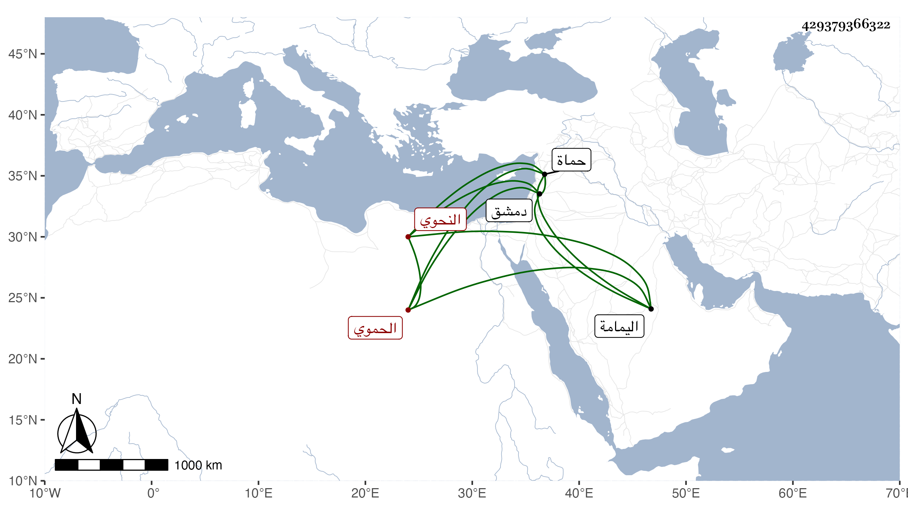

0902Sakhawi.DawLamic.ITO20230111-ara1.EIS1600.429379366322
Biography ID: 429379366322
360
محمد الشمس الحموي النحوي ويعرف بابن العيار . قال شيخنا في إنبائه : كان في أول أمره حائكا ثم تعانى الاشتغال فمهر في العربية وأخذ عن ابن جابر وغيره ثم سكن دمشق ورتب له على الجامع تصدير بعناية البارزي ، وكان حسن المحاضرة غير محمود في تعاطي الشهادة ، زاد غيره أنه أخذ عن الشمس الهيتي نزيل حماة وبه تخرج وتميز وله نظم من محاسنه ما مدح به البرهان بن جماعة :
| إن كان للموى ندى فلأنت يا | قاضي القضاة عطاؤك الطوفان |
| أو كان سر للإله بخلقه | قسما لأنت السر والبرهان |
قال فقال لي يا شيخ على أي شيء سكنت ياء القاضي قال فقلت على حد قول الشاعر :
| ولو أن واش باليمامة داره | وداري بأقصى حضر موت اهتدى ليا |
قال فقال لي أحسنت وأجازني جائزة حسنة مات في ذي القعدة سنة ثمان وعشرين .
